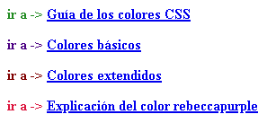
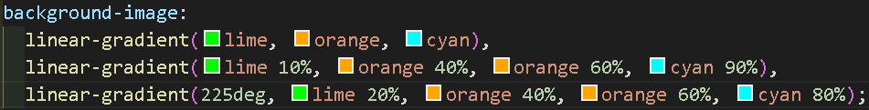
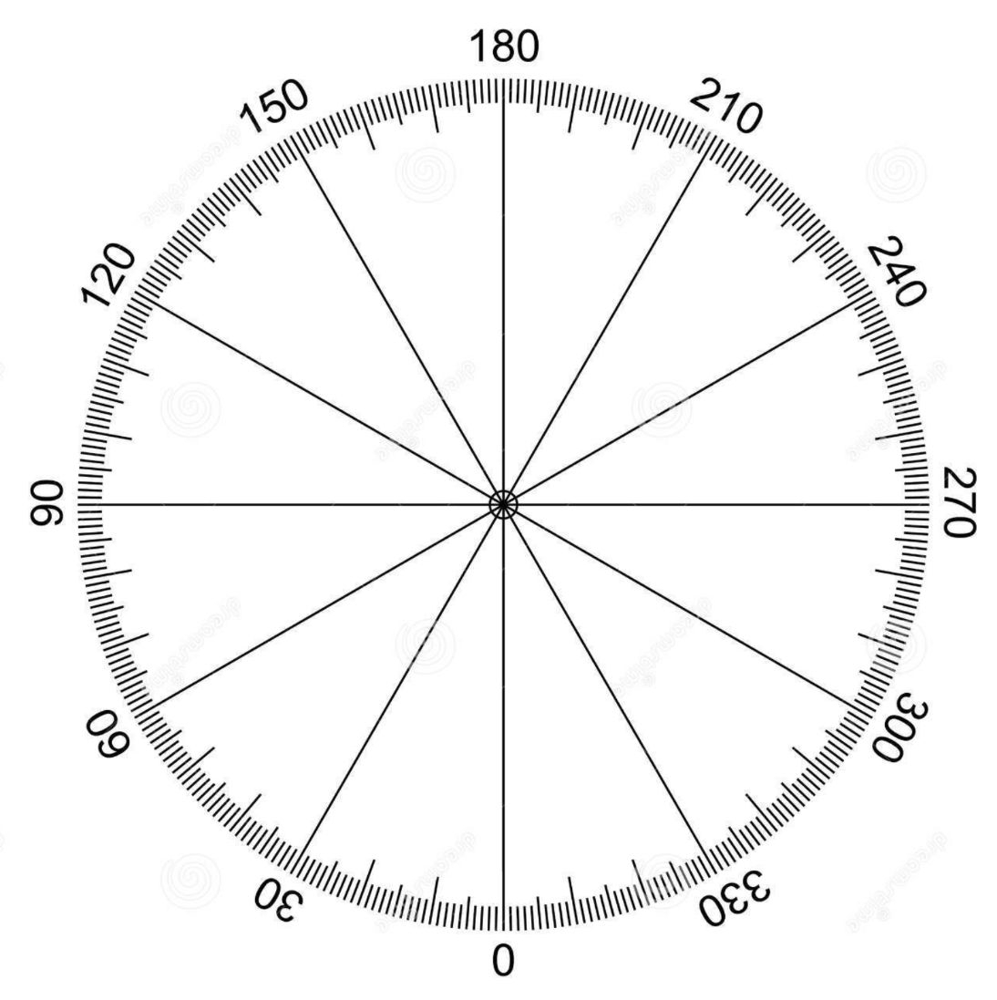
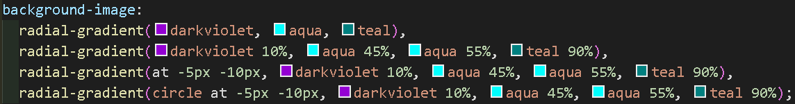
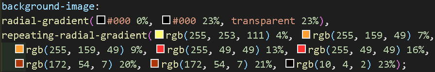

Color
En el área del color la propiedad color es lo que se visualiza en el frente y el background es lo que se visualiza atrás, de fondo.
Existen dos modos de color básico.
Aditivo: la suma de todos los colores es blanco, sus colores primarios son RGB (red, green y blue).
Sustractivo: la suma de todos los colores es negro, sus colores primarios son CYMK (cyan, magenta, yellow y black).
RGB
En el modo RGB se tienen 8 bits de color, significa que cada canal tiene 28 variaciones posibles, o sea 256 variaciones posibles que comienzan en 0 y terminan en 255. Combinando los 3 colores en cada una de sus variaciones podemos obtener más de 16.5 millones de colores.
Existe un cuarto canal que define la transparencia del color y va de 0 a 1 tomando en cuenta decimales como .5 en donde 0 es transparente y 1 es visible, este cuarto canal es omisible y por default es 1.
Las formas de colocar los colores rgb en el código son:
color: rgb([0 a 255],[0 a 255],[0 a 255]);
color: rgba([0 a 255],[0 a 255],[0 a 255], [0 a 1]);
Notación hexadecimal
Es la forma más normal de colocar un color en un código y se utilizan números y letras para la selección del color, del 0 al 9 y de la A a la F teniendo 16 diferentes opciones para seleccionar un tipo de color, se pueden colocar minúsculas o mayúsculas pero es más correcto colocar la notación en mayúsculas. Utilizando dos de estos valores se pueden obtener lo equivalente a cada valor del RGB
| 0 | 1 | 2 | 3 | 4 | 5 | 6 | 7 | 8 | 9 | A | B | C | D | E | F |
| 1 | 2 | 3 | 4 | 5 | 6 | 7 | 8 | 9 | 10 | 11 | 12 | 13 | 14 | 15 | 16 |
FF=(2
4*2
4)=(16*16)=256 valores que es como contar de 0 a 255
Las formas de colocar los colores en hexadecimal en el código son:
color:
#FF00AA;
Los primeros dos dígitos representan la gama del color rojo o Red, los siguientes dos dígitos representan la gama del verde o Green y los dos últimos representan la gama del azul o Blue.
Se pueden abreviar solamente si los dos valores de cada gama son idénticos, ejemplo:
color:
#FF00AA;
color:
#F0A;
También se puede colocar un séptimo y octavo valor para indicar la transparencia al igual que en
rgba, donde 00 es transparente y FF es visible (ejemplo: #FF00AA8C).
HSL
Es un modo de color y sus siglas significan:
Hue (tono de 0 a 360)
| 0 | rojo |
| 60 | amarillo |
| 120 | verde |
| 180 | cyan |
| 240 | azul |
| 300 | magenta |
| 360 | rojo |
Saturation (instead del color de 0% gris a 100% color puro)
Light (luz de 0% negro a 100% blanco)
Las formas de colocar los colores hsla en el código son:
color:
hsl([Hue], [Saturation], [Light]) ejemplo: hsl(200, 80%, 40%)
Se le puede colocar un cuarto canal que definirá la transparencia del color y al igual que en
rgba o en hexadecimal, va de 0 a 1
color:
hsla(200, 80%, 40%, .5)
currentColor
El valor
currentColor se usa para que el color del padre de un elemento sea heredado a uno o más elementos.
ejemplo:
ir a -> Guía de los colores CSS
ir a -> Colores básicos
ir a -> Colores extendidos
ir a -> Explicación del color rebeccapurple


Al aplicar el código en todas las etiquetas
a, se aplica en cada uno de los enlaces el color de sus padres
p. La propiedad currentColor sólo puede adquirir el color de la propiedad
color del padre que por defecto siempre es negro, es decir, no se puede tomar el color de fondo, borde, etc., pero el currentColor se puede aplicar en la propiedad que sea.
Degradados lineales
Permiten tener varios colores que se vayan cambiando entre ellos de manera suave, este degradado se adapta al tamaño de la pantalla automáticamente a menos que se les agregue un tamaño especifico.
Cuando colocamos un color de fondo utilizamos
background-color pero cuando es más de un color se utiliza
background-image.
background-image: linear-gradient([color 1], [color 2], [color n]);
Se puede indicar, en porcentaje o pixeles, desde que punto se debe comenzar a degradar un color mientras tanto se visualiza el color puro, a esta indicación se le conoce como stop.
background-image: linear-gradient([color 1] [stop], [color 2] [stop], [color 2] [stop], [color n] [stop]);
ejemplo:
background-image: linear-gradient(yellow 25%, blue 40%, blue 50%, green 80%)
El color yellow puro abarcara del 0% del elemento hasta el 25% del elemento y apartir de ahí se degrada con el siguiente elemento, el color blue se degrada hasta el 40% del elemento y continua puro hasta el 50% del elemento en donde comienza a degradarse, el color green se degrada hasta el 80% del elemento y apartir de ahí es green puro.
En los colores de en medio se colocan dos veces, uno para indicar donde inicia el degradado de su predecesor y otro para indicar donde iniciará el degradado de su sucesor.
Se puede colocar aparte el ángulo o dirección del degradado (180 deg es el valor por default).
background-image: linear-gradient([#deg | to dirección], [color 1] [stop], [color 2] [stop], [color 2] [stop], [color n] [stop]);
Direcciones: to top, to left, to bottom, to right y sus combinaciones de 2.
ejemplo: background-image: linear-gradient(100deg, lima 20%, yellow 20%, yellow 50%, orange 50%);
ejemplo: background-image: linear-gradient(to bottom right, lima 20%, yellow 20%, yellow 50%, orange 50%);
En el primer ejemplo se elige un ángulo de 100° y en el segundo ejemplo se indica que el degradado sea en dirección a la parte inferior derecha del usuario.


Degradados radiales
Son parecidos a los lineales, pero el cambio de color se hace del centro a las esquinas.
background-image: radial-gradient([color 1], [color 2], [color n]);
Igual que el lineal se puede indicar, en porcentaje o pixeles, desde que punto se debe comenzar a degradar un color.
background-image: radial-gradient([color 1] [stop], [color 2] [stop], [color 2] [stop], [color n] [stop]);
En el degradado radial se puede indicar, con el eje X y Y usando px o %, donde será el centro del que parten los colores para degradarse (por default es 50% 50%).
background-image: radial-gradient([at +X +Y ], [color 1] [stop], [color 2] [stop], [color 2] [stop], [color n] [stop]);
ejemplo: background-image: radial-gradient(at 50% 0, lima 20%, yellow 20%, yellow 50%, orange 50%);
En el degradado radial se puede indicar el tamaño (px o %) y la forma (circle o ellipse) para poder manipular el degradado, si se modifica el tamaño del degradado no se podrá adaptar al tamaño del navegador (ellipse esta por default).
background-image: radial-gradient([#px | #px #px] | [circle | ellipse] [at +X +Y ], [color 1] [stop], [color 2] [stop], [color 2] [stop], [color n] [stop]);
Se coloca un numero de tamaño para el circulo (con el cual se define el radio) y dos numeros de tamaño para la elipse (con los cuales se define el radio mayor y el menor), si se coloca el tamaño se ignora la forma (circle o ellipse) ya que se indica con los radios colocados si es un circulo o una elipse.
Existen palabras clave para indicar el tamaño:
| closest-side | lado más cercano |
| farthest-side | lado más lejano |
| closest-corner | esquina más cercana |
| farthest-corner | esquina más lejana |
Con estas claves se puede facilitar el tamaño del degradado repartiendo el degradado entre un color las esquinas o lados mas cercanos o lejanos, esto funciona especialmente en espacios no simétricos y con centros del degradado que no estan en el origen.

Degradados repetidos.
Este degradado repite los degradados cuando han terminado su
stop especificado, puede utilizarse en degradados lineales y radiales.
background-image: repeating-linear-gradient( [color 1] [stop], [color 2] [stop], [color 3] [stop], [color n] [stop]);

calc
La funcion
calc de CSS permite hacer operaciones, es util para calcular valores de variables (ejemplo: --oper: calc(var(--tamaño)/2);).
div.ying-yang{
--tamaño: 150px;
--tamcalc: calc(var(--tamaño)/2);
width: var(--tamaño);
height: var(--tamaño);
border: 1px solid hsl(0, 100%, 0%);
border-radius: 50%;
background-image:
radial-gradient(var(--tamcalc) at 50% 25%, rgb(0, 0, 0) 10%, transparent 10%),
radial-gradient(var(--tamcalc) at 50% 75%, rgb(255, 255, 255) 10%, transparent 10%),
radial-gradient(var(--tamcalc) at 50% 25%, rgb(255, 255, 255) 50%, transparent 50%),
radial-gradient(var(--tamcalc) at 50% 75%, rgb(0, 0, 0) 50%, transparent 50%),
linear-gradient(to right, #FFF 50%, #000 50%);
}